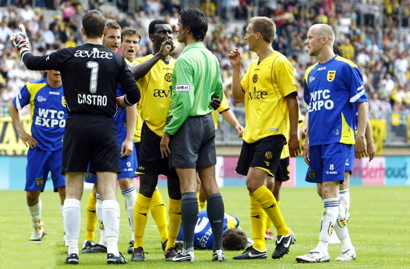
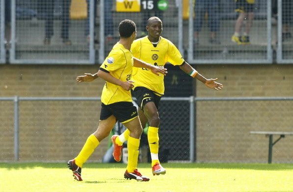

Meeuwis is al ingerukt na zijn domme rode kaart.

Cissé scoort zijn laatste wedstrijd voor Roda JC: 1-0, (38'). In de 80e min.
wordt het 1-1 door De Vries.
In een met ruim 18.000 toeschouwers volgepakt Parkstad
Limburg Stadion eiste arbiter Bas Nijhuis voor rust de hoofdrol op. Hij
stuurde na een halfuur Marcel Meeuwis uit het veld, na een onbesuisde
tackle. Een triest afscheid voor de middenvelder, die volgend seizoen voor
Borussia Mönchengladbach uitkomt.
Cambuur Leeuwarden kon slechts een minuut of tien profiteren van het
numerieke voordeel. Op slag van rust moest ook verdediger Koen Brack
vertrekken, na zijn tweede gele kaart. Heel Cambuur dacht aan een strafschop
na een overtreding op Brack in het strafschopgebied van Roda JC. Nijhuis
legde de buiteling anders uit en gaf Brack geel voor een schwalbe.
De thuisclub leidde op dat moment met 1-0 door de treffer van Cissé, uit een
voorzet van Marcel de Jong. Cissé raakte in de slotfase voor rust bovendien
de lat en zag een treffer vanwege buitenspel afgekeurd. Cambuur Leeuwarden
stelde aanvallend teleur. Slechts eenmaal veerde de Friese aanhang op, maar
Sandor van der Heide slaagde erin om de bal van dichtbij naast het doel te
mikken.
Het gebrek aan scherpte in de afronding speelde de ploeg van trainer Stanley
Menzo ook na rust parten. Jeffrey de Visscher en Danny Guijt kregen
prachtige kansen om Cambuur langszij te brengen, maar faalden. Omdat ook
Roda JC aanvallend weinig meer presteerde - Laurent Delorge en Marcel de
Jong misten vrij voor doelman Peter van der Vlag - bleef het spannend.
Tien minuten voor tijd bracht invaller Mark de Vries Cambuur met een rake
kopbal toch op gelijke hoogte: 1-1. In de slotseconden kroop Roda JC door
het oog van de naald, toen De Visscher met een prachtig afstandsschot de lat
raakte.
Bron: fcupdate.nl